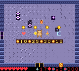

A bubble without a voice
The merchant signaled that something was there, but never explained stock, prices, or what survived a run.
Working milestone · Lore & conversation
Merchants, villagers, and peaceful creatures now have voices—small, strange fragments of a world that remembers five champions differently every run.
The useful kind of worldbuilding
Every conversation carries atmosphere on page one and actionable knowledge on page two. The words can stay mysterious without making the mechanics mysterious.

The merchant signaled that something was there, but never explained stock, prices, or what survived a run.
The second page is generated from the four live counters: every line gives the item's exact effect and price, then says how to buy it.
Voices found between battles
The end court of each dungeon wing may shelter a stage-native creature. A small sparkle marks the rare moment when a familiar silhouette is a witness, not prey.
Encounter language
The creature inherits its biome’s native art. The sparkle and its stillness invite curiosity without introducing a modern quest marker.
Mechanically accurate advice
“The Serpent feeds. Deny four storms. Flee the full coil.”
Its warning maps directly onto the Colossus: four motes, visible growth, then the full-coil AOE.
Readable procedural stock
Smiths, cartographers, and lorekeepers still teach their services. Merchants now name what each generated ware actually does, show its exact cost, and explain the contact-purchase rule.
Nine witnesses · nine climates
Crystal Crab. Moss Coil. Cinder Kite. Frost Lancer. Bog Toad. Bramble Sprite. Sunwheel. Dusk Midge. Void Halo.
Each remembers a different piece of the five-spirit oath, then points toward a secret, hazard, or Colossus opening from its own region.
Browse all stages and creatures ↗Cartridge interaction
A peaceful witness uses its stage silhouette but does not pursue or attack.
TALK replaces the primary weapon only inside the small conversation radius.
A advances to page two. B or START returns immediately to play.
Stock, enemies, terrain, secrets, and the procedural graph remain untouched.
Still a roguelike. Now with memory.
The five champions, the oath, and the witnesses are lore anchors. Which rooms you find them beside—and what their warning means for your current build—belongs to the run.